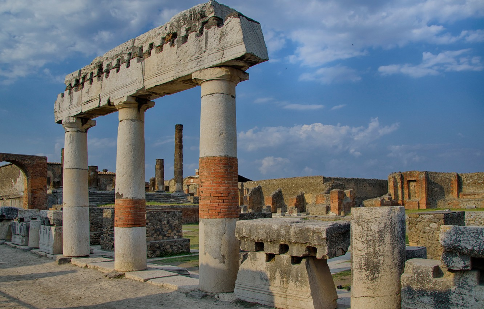
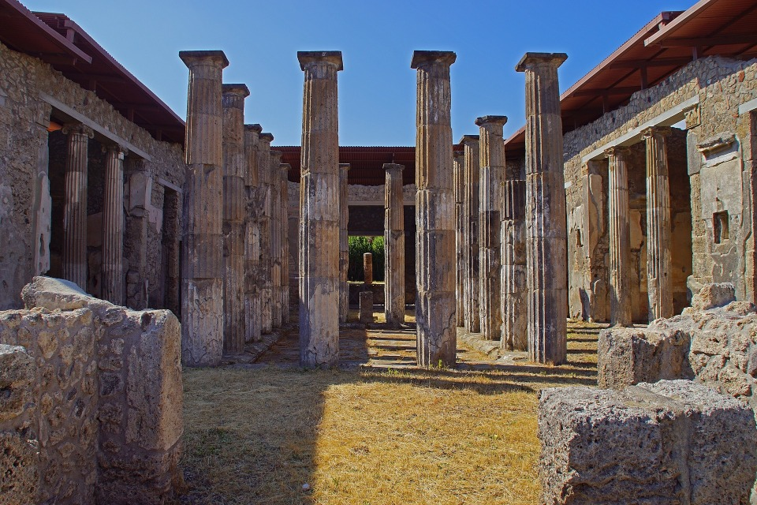
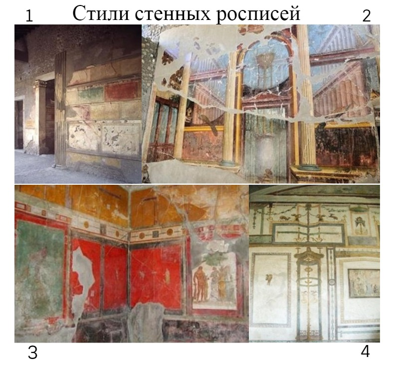

Помпеи – погребенный город
Архитектура
Присоединение к Риму дало толчок развитию города в III в. до н. э. Жители колонии копировали постройки Рима. Во II в. до н. э. появились новые общественные постройки: храмы, театры, бани.
В городе существовали два театра. Меньший и крытый из них использовался как одеон. Также здесь находился амфитеатр и три большие термы. Сохранилось большое количество жилых зданий и лавок, названных по именам владельцев, в честь выдающихся художественных произведений, или же в честь отдельных личностей или событий: «Дом Фавна», «Дом Эпиграмм», «Дом Менандра», «Вилла Мистерий». Стены богатых домов и общественных зданий были украшены декоративными фресками: «Дионисийские мистерии на «Вилле Мистерий» и мозаиками: «Битва при Иссе» с изображением Александра Македонского в «Доме Фавна» [7].
Город, обнесенный стенами с восемью воротами и многочисленными башнями, имел упорядоченную планировку, за исключением древнейшей юго-западной части, и был разделен археологами на 9 районов. Главные магистрали и сооружения ориентированы на Везувий. Форум в юго-западной части города формировался с III в. до н. э. С севера площадь замыкается храмом Юпитера. Он был перестроен в конце I в. до н. э. как храм богов капитолийской триады – Юпитера, Юноны и Минервы. С трех других сторон украшена портиками, за которыми располагаются мацеллум (рынок), храмы Ларов, Веспасиана, здание Евмахии (шерстяной рынок и биржа), курия, базилика. В западной части форума находится святилище Аполлона. У южной стены Помпей расположен второй, Треугольный форум с дорическим храмом, построенным в VI в. до н. э. (сохранилось основание). А также святилище Исиды, палестра и 2 театра – Большой (на 5 тысяч мест, самый ранний из сохранившихся каменных древнеримских театров) и Малый (на 1200 мест). Квадратный в плане (27×27 м), с крышей, расписанной внутри во втором помпеянском стиле амфитеатр (80-е гг. до н. э.) в юго-восточной части Помпей, вмещал все население города (20 тысяч мест) и много приезжих. Его арена (67×35 м) лежала ниже уровня земли, а ряды для зрителей с двух сторон опирались на городские стены. В кварталах, окружавших амфитеатр, было множество гостиниц (около 40), таверн, винных лавок (около 120), пекарен (свыше 30). Термы – Стабиевы (построены во II в. до н. э.), Форумские и Центральные (не завершены к 79 г. н. э.) – отличает прекрасная сохранность. Также, как и жилые дома, что позволяет проследить развитие планировки тех и других.
Сохранившаяся жилая архитектура позволяет судить о бытовых условиях жизни в Древнем Риме. Основная масса горожан жила в 3 – 4-комнатных домах, открывавшихся на улицу табернами, в которых располагались лавки, трактиры, мастерские. Жилище богатых людей – домус – было представлено зданием, тянувшемся вглубь участка, с глухими наружными стенами и входом на торцовой стене. Через вестибюль попадали в атрий, вокруг которого группировались жилые и хозяйственные помещения. На противоположной входу стороне был таблинум – зал, служивший сначала местом семейных трапез, позднее – кабинетом хозяина дома. С середины II в. до н. э. центром дома становится перистиль, с садом, фонтаном, иногда с бассейном. В отдельные группы выделяются комнаты для женщин (гинекей) и для гостей (оспициум). Появляется экус – парадный зал с колоннадой. Во II – I вв. до н. э., по мере усложнения планировки дома, развивается и обогащается его отделка: полы украшаются черно-белой и цветной мозаикой, стены – росписями, в садах размещают многочисленные статуи, бюсты хозяина дома и членов его семьи, в комнатах – роскошную серебряную и бронзовую утварь. С I в. до н. э. до I в. н. э. многие богатые дома меняют владельцев. Ими становятся ремесленники, торговцы, приспосабливающие их к своим нуждам и занятиям – под пекарни, красильни и так далее.
За пределами городских стен были расположены некрополи Помпей, самый обширный из которых находился вдоль дороги, шедшей от Геркуланских ворот и получившей название «Дорога гробниц». В этом же районе был открыт ряд вилл римской и помпеянской знати. Первоначально вилла была центром поместья, фундуса, скромная жилая часть ее составляла одно целое со служебными и хозяйственными постройками. Тип загородной виллы – для отдыха, уединения – складывается в течение II – I в. до н. э., повторяя устройство домуса, но с более свободной планировкой, павильонами, беседками, термами в обширном саду, украшенном фонтанами и скульптурой. Например, Вилла Мистерий. Вместе с городами Геркуланум и Торре-Аннунциата Помпеи включены в список Всемирного наследия [4].
В стенных росписях Помпей выделяют 4 стиля. 1-й: «инкрустационный» – существовал со II в. до н. э. до начала I в. до н. э. Являлся имитацией мраморной облицовки. 2-й: «архитектурно-перспективный» – в основном использовался с 80 г. до н. э. до 30 г. до н. э. Представлял собой иллюзионистические архитектурные изображения, пейзажи, мифологические сцены. 3-й: «орнаментальный» – начал использоваться с I-й половины I в. н. э. Данный стиль состоял из симметричных орнаментальных композиций, включающих мифологические сцены и пейзажи. 4-й – существовал с 63 г. до н. II в. В нем преобладали фантастические архитектурные построения. Так как Помпеи погибли внезапно, сохранилась вся обстановка домов, лавок, кабачков, общественных зданий. Поэтому Помпеи – важнейший источник сведений о хозяйстве, быте, культуре, искусстве Римской империи I в. н. э.[5].
Таким образом, Помпеи имели разнообразную архитектуру и 4 стиля стенных росписей. В городе были построены все базовые типы сооружений, которые были характерны для римского города тех времен: храм Юпитера, базилика, крытый рынок товаров и т.д.
Галерея